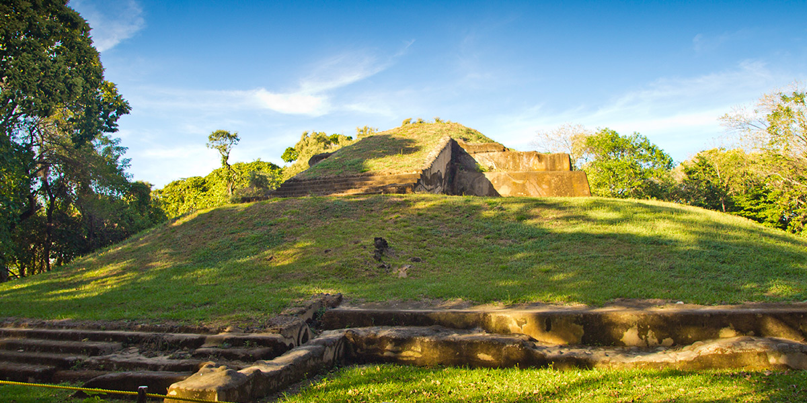
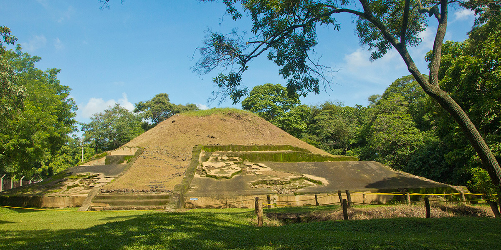

CASA BLANCA
Casa Blanca tiene un área de 6 hectáreas, la cual representa un fragmento de un sitio mucho mayor, ahora en gran parte destruido debido al crecimiento de la ciudad de Chalchuapa. Junto con la vecina zona de El Trapiche (fuera del parque), Casa Blanca llegó a ser el centro de un importante señorío maya temprano, de finales del periodo Preclásico tardío (aproximadamente entre 200 a.C. y 250 d.C.). La estructura piramidal más grande conocida en El Salvador fue construida en el sector de El Trapiche, y frente a ella se han encontrado fragmentos de estela, esculturas de cabeza de jaguar entre otros elementos escultóricos. Otra estructura de esa época (investigada antes de su destrucción) contenía los restos de más de 30 personas, aparentemente sacrificados; es posible que hayan sido cautivos de una de las campañas de guerra conducidas por este antiguo reino.
|
Al inicio del Período Clásico se trasladó el centro ceremonial principal desde las áreas de El Trapiche-Casa Blanca hacia lo que hoy se conoce como Tazumal, quedando abandonada el área de Casa Blanca. Al comenzar el Período Clásico Tardío Casa Blanca fue de nuevo utilizada bajo el control del centro ceremonial de Tazumal. El sitio ha aportado evidencia de actividad humana que se remonta a más de 3,000 años desde el presente. |
 |
Se trata del registro de polen en una pequeña laguneta de la zona que indica la destrucción del bosque primario seguido por el cultivo de maíz, señalando de forma dramática la introducción de agricultura intensiva en la región y el establecimiento de vida en aldeas que dieron pie a las civilizaciones mesoamericanas.
|  |
Los hallazgos más tardíos en Casa Blanca son de entierros con ofrendas del periodo que cierra con la invasión de los españoles, el Posclásico. Dirección: Km. 78, sobre el by pass de la carretera que conduce de Santa Ana a Chalchuapa, Santa Ana Horario: De martes a domingo de 9:00 a. m. a 4:00 p. m. Recorrido guiado: de 35 a 45 minutos |
Entrada: Salvadoreños $1.00, centroamericanos y extranjeros residentes $3.00, y no residentes $5.00. Residentes del municipio donde se encuentra el parque, estudiantes con carné vigente, personas con discapacidad, adultos mayores y niños menores de 12 años, entran gratis.